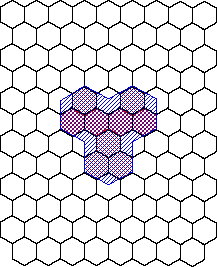

| Courtial, Leach, and Padgett have developed
a method for generating stationary (unchanging) fractal videofeedback patterns with the zoom set so the
camera sees only a portion of the monitor, a monitor-outside-a-monitor configuration. |
Lighted pixels on the monitor are magnified, then reprocessed as lighted pixels. |
That is, the pixels mask the image. |
Iteration generates this pixel mask patern at many levels. |
| For example, suppose we have a hexagonal grid of pixels. |
| Start with three lighted pixels sharing a common vertex and magnify by a factor of 2. |
|  |
| Only pixels contained in the image of a single pixel are lighted red.
Click to remove the blue images. |
| More details and examples can be found in Fractals
in pixellated video feedback. |